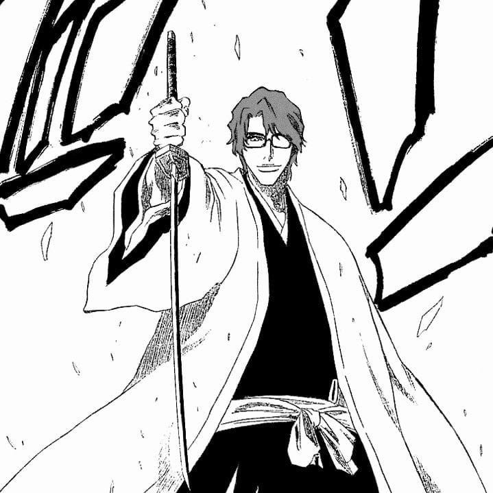
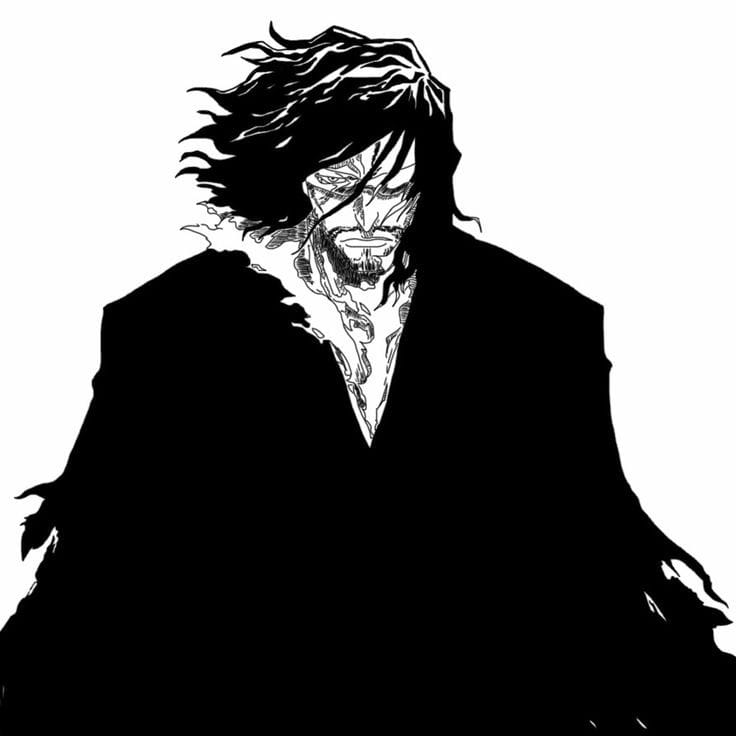
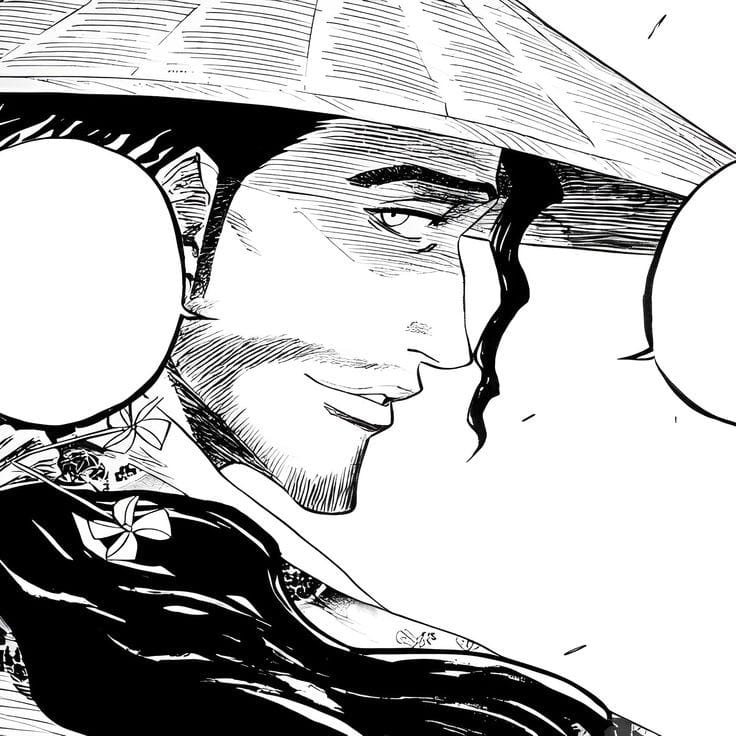
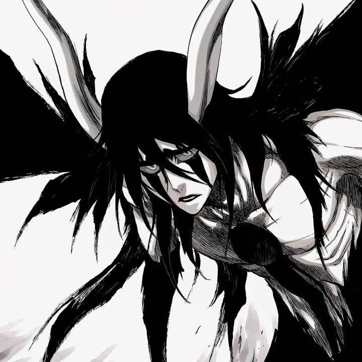
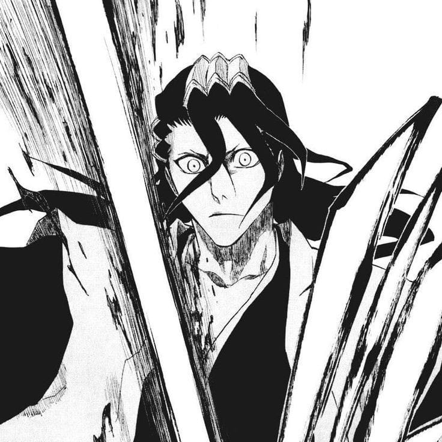
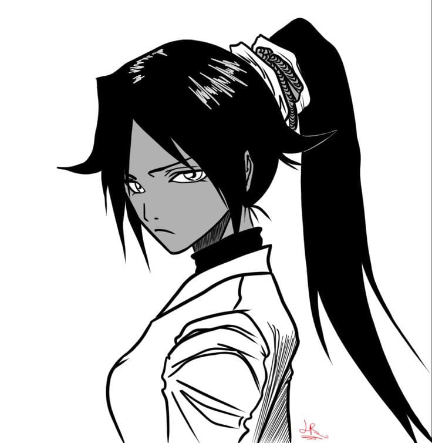
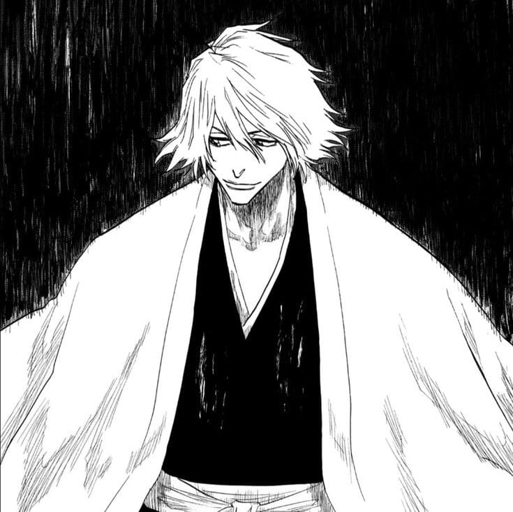
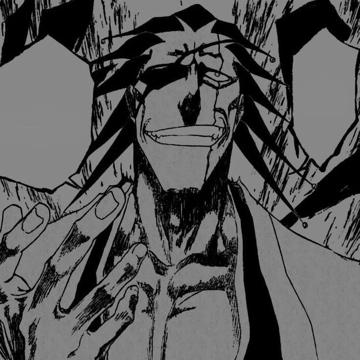
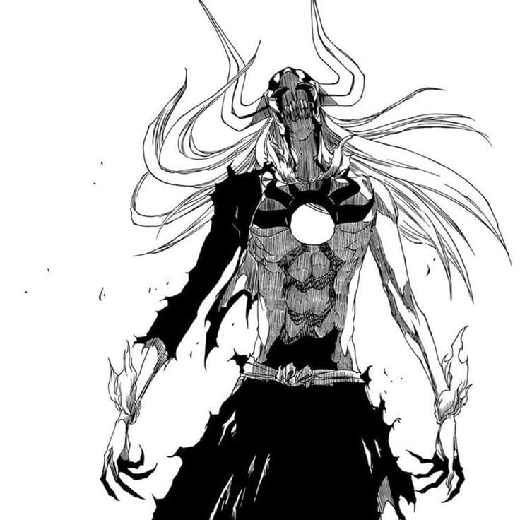

"Esticando as mão atravessamos as nuvens e cruzamos os céus. Contudo, mesmo se capturássemos a Lua e Marte ainda não alcançaríamos a verdade."

Zangetsu
"Uma vez enferrujado, não consegue mais abrir caminho. Uma vez sem controle, rasga a si próprio em pedaços. Sim, o orgulho se parece com uma espada."

Shunsui Kyoraku
"Não acho as pessoas belas como acho que as flores são. Pessoas são parecidas com flores só quando caem mutiladas ao chão."

Ulquiorra Cifer
"Las noches eram frias e sombrias, assim como meu coração, sozinho eu vivia, preocurando algo para preencher o buraco, que tinha no peito."

Byakuya Kuchiki
"Eu não sou arrogante. arrogante é você que pensa que está no mesmo nível que eu."

Yoruichi Shihoin
"Cem anos se passaram ... um ano pode ser muito rápido ... cem anos e nenhum momento de descanso. Quando posso descansar? E quando eu devo descansar ... o que eu vou fazer?"

Urahara Kisuke
"O passado é algo que não pode ser mudado, mas o futuro é uma página em branco que podemos escrever da forma que quisermos."

Kenpachi Zaraki
"Lealdade a alguém é diferente de depender dela. Não é interressante lutar contra alguém que não tem seus próprios objetivos."

Ichigo Kurosaki
"Não sei o que tenho, mas me sinto bem. Meus ferimentos não doem agora... e não estou nem um pouco preocupado em perder para você."

Coyote Starrk
"Eu não estou sozinho. Eu não estou sozinho. Não estou mais sozinho.”